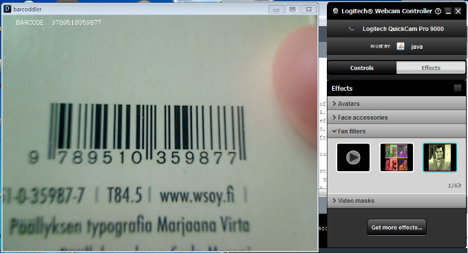

Barcoddler
(Originally published in my blog in October 4, 2012)
Looks like I forgot to report about this project earlier.
Barcoddler is a Processing program to read barcodes.
I’ve been using LibraryThing for cataloguing my books. LibraryThing interfaces with various library databases - all you need is to enter ISBNs or barcode readings.
Some day, I will probably buy a real barcode reader. I might even buy one of the :CueCats from LibraryThing for dot-com boom nostalgia.
Meanwhile, it’s probably adequate to use a webcam as a barcode reader.
Processing is able to use Java libraries. Fortunately, there’s a good barcode reader library available for Java - zxing, developed for Google and Android.
The “magic part” - two lines of code - of this Processing sketch was taken from MAKE article. The article is about QR codes, but since zxing supports two-dimensional barcodes, it’s just a matter of tweaking.

I did run into a rather odd problem with this sketch. I spent hours wondering why the hell the library wasn’t detecting barcodes. I had never had really good experience with zxing anyway - I had previously used an older version of Barcode Reader, a JavaME app based on zxing, and the app didn’t actually read barcodes.
The problem, as it turned out, wasn’t the fault of the cellphone. zxing just isn’t quite refined enough.
Turns out that zxing doesn’t like crappy cameras.
zxing couldn’t make sense of the blurry and noisy image that my netbook’s built-in webcam was feeding it, any more than it could make sense of the slightly blurry images of my cheapo Nokia. Google built zxing for Android phones which may actually have somewhat plausible cameras. (I doubt they do, though. All cellphone cameras suck, unconditionally.)
However, zxing could make sense of the sharper image fed by my Quickcam. It actually allows for focusing, bringing in crystal clear images. (It also allows for fascinating image filters to be used, but that didn’t quite happen here.)
As the screenshot was made, I was using GSVideo library for video capture. I’ve now updated the program to use the new Processing 2.0 beta built-in video library, which is based on GSVideo, which unfortunately doesn’t work quite as well yet.
Stuff To Do: actually make it work on Processing 2.0 again, adding better support for video source choices, and a better way to gather multiple barcodes.